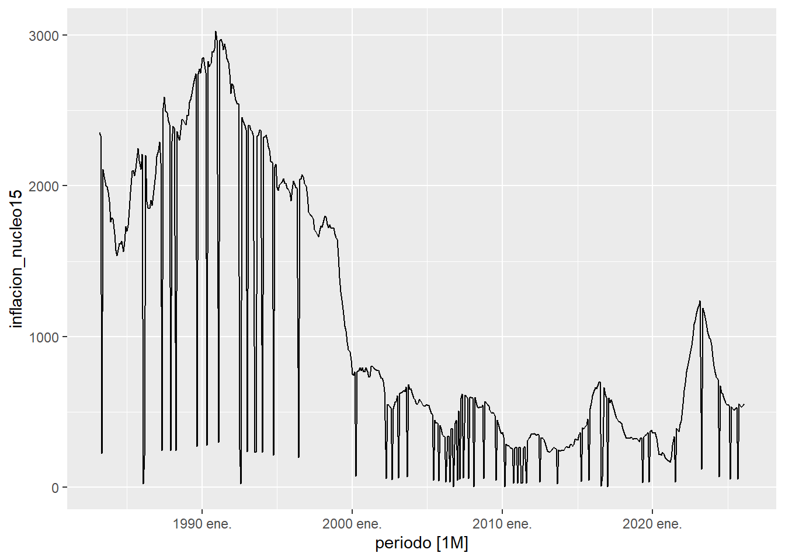
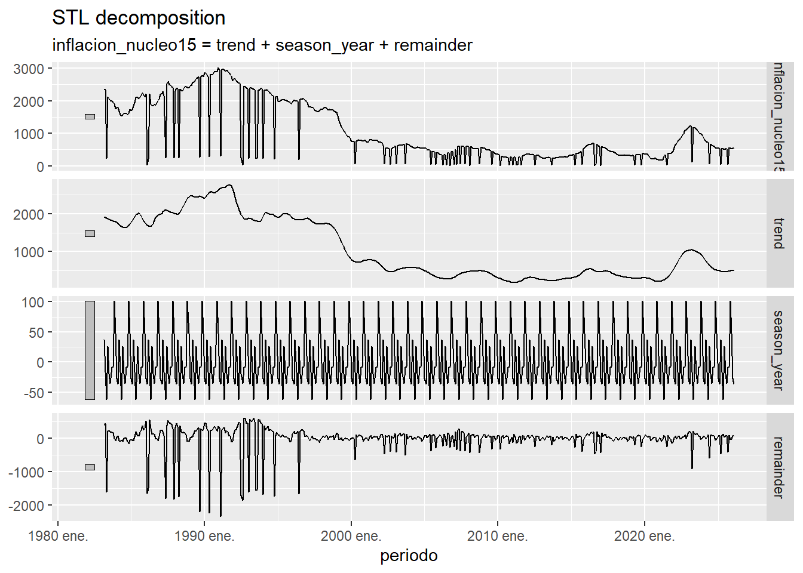
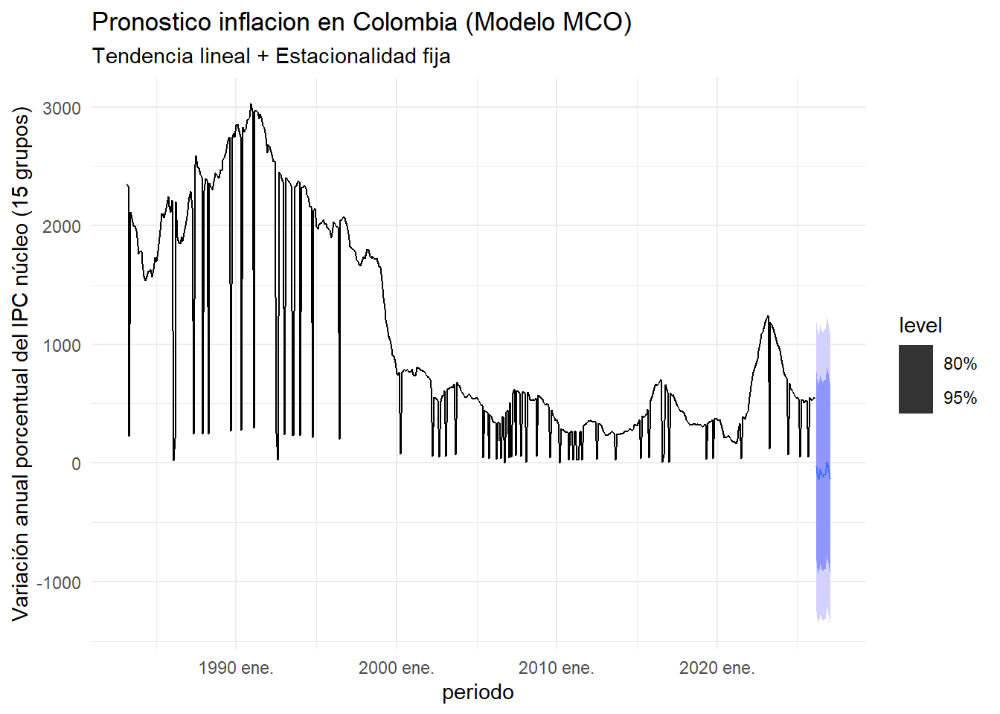
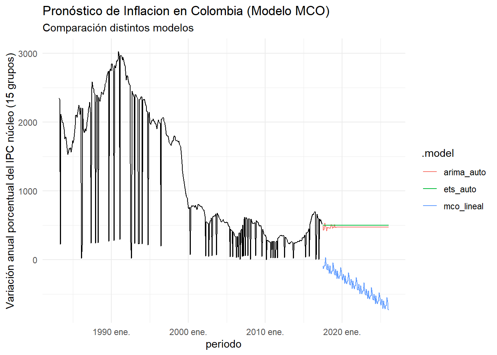
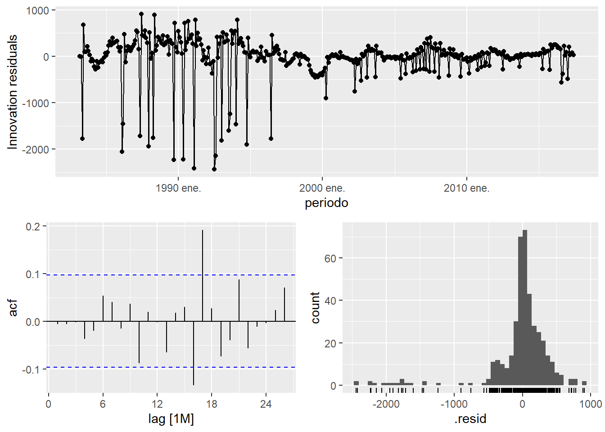

inflacion_nucleo15 es una medida de inflación subyacente (inflación núcleo) que calcula cómo están cambiando los precios en la economía excluyendo los componentes más volátiles, usando una canasta de 15 grupos del IPC.
Qué es la inflación núcleo
La inflación núcleo es la inflación sin incluir precios muy volátiles, como por ejemplo:
Alimentos Energía Combustibles Algunos servicios regulados
Se usa porque esos precios suben y bajan muy rápido y pueden distorsionar la inflación real de la economía.
Solo toma 15 rubros más estables del IPC, por eso se llama “núcleo 15”
Es una tasa de variación anual (%)
Para qué sirve: Ver la tendencia real de la inflación Tomar decisiones de política monetaria Hacer modelos econométricos (ARIMA, ETS, etc.) Evitar distorsiones de choques temporales
library(tidyverse)
Warning: package 'tidyverse' was built under R version 4.5.3
Warning: package 'ggplot2' was built under R version 4.5.1
Warning: package 'tibble' was built under R version 4.5.1
Warning: package 'tidyr' was built under R version 4.5.1
Warning: package 'readr' was built under R version 4.5.1
Warning: package 'purrr' was built under R version 4.5.1
Warning: package 'dplyr' was built under R version 4.5.1
Warning: package 'stringr' was built under R version 4.5.1
Warning: package 'forcats' was built under R version 4.5.1
Warning: package 'lubridate' was built under R version 4.5.1
── Attaching core tidyverse packages ──────────────────────── tidyverse 2.0.0 ──
✔ dplyr 1.1.4 ✔ readr 2.1.5
✔ forcats 1.0.1 ✔ stringr 1.5.2
✔ ggplot2 4.0.0 ✔ tibble 3.3.0
✔ lubridate 1.9.4 ✔ tidyr 1.3.1
✔ purrr 1.1.0
── Conflicts ────────────────────────────────────────── tidyverse_conflicts() ──
✖ dplyr::filter() masks stats::filter()
✖ dplyr::lag() masks stats::lag()
ℹ Use the conflicted package (<http://conflicted.r-lib.org/>) to force all conflicts to become errors
library(tsibble)
Warning: package 'tsibble' was built under R version 4.5.3
Adjuntando el paquete: 'tsibble'
The following object is masked from 'package:lubridate':
interval
The following objects are masked from 'package:base':
intersect, setdiff, union
library(feasts)
Warning: package 'feasts' was built under R version 4.5.3
Cargando paquete requerido: fabletools
Warning: package 'fabletools' was built under R version 4.5.3
library(fable)
Warning: package 'fable' was built under R version 4.5.3
Rows: 516 Columns: 4
── Column specification ────────────────────────────────────────────────────────
Delimiter: ";"
chr (2): Inflación sin alimentos, Inflación sin alimentos ni regulados
num (1): Inflación núcleo 15
date (1): Periodo(MMM, AAAA)
ℹ Use `spec()` to retrieve the full column specification for this data.
ℹ Specify the column types or set `show_col_types = FALSE` to quiet this message.
# Grafico de la serie# Tamaño de los graficosoptions(repr.plot.width =6, repr.plot.height =4)autoplot(Inflacion)
Warning: `autoplot.tbl_ts()` was deprecated in fabletools 0.6.0.
ℹ Please use `ggtime::autoplot.tbl_ts()` instead.
ℹ Graphics functions have been moved to the {ggtime} package. Please use
`library(ggtime)` instead.
Plot variable not specified, automatically selected `.vars =
inflacion_nucleo15`

# Descomposicion STL de la serieInflacion |>model(STL(inflacion_nucleo15 ~trend() +season(window ="periodic")) ) |>components() |>autoplot()
Warning: `autoplot.dcmp_ts()` was deprecated in fabletools 0.6.0.
ℹ Please use `ggtime::autoplot.dcmp_ts()` instead.
ℹ Graphics functions have been moved to the {ggtime} package. Please use
`library(ggtime)` instead.

Esta es el análisis STL ( descomposición de tendencias estacionales usando Loess ) de la serie inflacion_nucleo15. Muestra cuatro componentes: Observed (serie original con picos en 80-90s y caída posterior), Trend (tendencia suave descendente desde ~2000), Seasonal (oscilaciones mensuales regulares de ~±50 unidades), y Remainder (ruido/residuos que deben ser aleatorios). El análisis confirma la estructura tendencia dominante + estacionalidad + ruido , útil para modelar o pronosticar.
# Ajustar el modelo usando TSLM (Time Series Linear Model - MCO para series de tiempo)fit_mco <- Inflacion |>model(mco_lineal =TSLM(inflacion_nucleo15 ~trend() +season()) )# Pronosticopronostico <-forecast(fit_mco, h=12) # 12 mesespronostico |>autoplot(Inflacion) +labs(title ="Pronostico inflacion en Colombia (Modelo MCO)",subtitle ="Tendencia lineal + Estacionalidad fija",y ="Variación anual porcentual del IPC núcleo (15 grupos)") +theme_minimal()
Warning: `autoplot.fbl_ts()` was deprecated in fabletools 0.6.0.
ℹ Please use `ggtime::autoplot.fbl_ts()` instead.
ℹ Graphics functions have been moved to the {ggtime} package. Please use
`library(ggtime)` instead.

Esta gráfica presenta los pronósticos del modelo MCO (lineal) para inflación en Colombia, descomponiendo la serie en tendencia + estacionalidad . La línea sólida negra muestra la tendencia principal descendente, las barras grises el componente estacional (picos y valles mensuales), y la zona sombreada azul el intervalo de confianza del 80% para el pronóstico futuro. Hacia adelante (2020+), el modelo proyecta una continuación de la tendencia de caída con oscilaciones estacionales contenidas, donde el 80% de probabilidad queda dentro del área azul
Qué está mostrando El modelo intenta explicar la inflación usando dos cosas:
Tendencia en el tiempo ( trend()), es decir, si la serie sube o baja con el paso de los meses.
Estacionalidad mensual ( season()), o sea, si ciertos meses suelen comportarse distintos a otros.
Este es el resumen de un modelo TSLM ( Time Series Linear Model ) ajustado a inflacion_nucleo15, similar al primero que viste pero con datos o especificación ligeramente distinta.
Puntos clave Intercepto = 1960.24 : valor base del modelo.
tendencia() = -3.0860 con valor p < 2e-16 : tendencia negativa altamente significativa .
season(Year2) a season(Year12) : la mayoría tienen p-values altos (>0.05), así que no hay estacionalidad significativa .
Ajuste del modelo R cuadrado múltiple = 0,4601 : explica el 46% de la variabilidad.
Estadístico F = 35,7, valor p < 2,2e-16 : modelo globalmente significativo .
Error estándar residual = 612 : error típico similar al anterior.
En resumen : confirma la tendencia descendente fuerte pero sin estacionalidad relevante , con ajuste moderado
# Ajustamos varios modelos para compararfit_comp <- Inflacion |>model(mco_lineal =TSLM(inflacion_nucleo15 ~trend() +season()),arima_auto =ARIMA(inflacion_nucleo15), # El algoritmo busca el mejor ARIMAets_auto =ETS(inflacion_nucleo15) # Suavizamiento exponencial )# Comparamos la precisión (Criterios de información)glance(fit_comp) |>select(.model, AIC, BIC, AICc) |>arrange(AIC)
El pipeline model()del paquete fable (ecosistema tidyverts ) se entrena simultáneamente:
mco_lineal: Modelo lineal de tendencia y estacionalidad ( TSLM), con trend()para captura lineal del tiempo y season()para efectos estacionales periódicos.
arima_auto: ARIMA automático que selecciona el mejor orden (p,d,q) minimizando criterios como AICc mediante búsqueda algorítmica.
ets_auto: Suavizamiento exponencial automático (ETS) que prueba combinaciones de error, tendencia y estacionalidad.
Qué significa cada columna
AIC : mide qué tan bien ajusta el modelo, penalizando la complejidad. Más bajo es mejor .
BIC : similar al AIC, pero penaliza más la complejidad. Más bajo es mejor .
AICc : es una versión corregida del AIC, útil sobre todo en muestras pequeñas o medianas. Más bajo es mejor .
# Medicion del redimiento del pronosticoaccuracy(fit_comp) |>select(.model, MAE, RMSE, MAPE, MASE)
Qué significa cada métrica MAE : error absoluto medio. Más bajo = mejor.
RMSE : penaliza más los errores grandes. Más bajo = mejor.
MAPE : error porcentual medio. Más bajo = mejor.
MASE : error escalado. Si es menor que 1, el modelo suele ser mejor que una predicción ingenua.
# Validación train (80%) - test pronóstico (20%)index_cut <-floor(nrow(Inflacion) *0.8)index_train <-seq(1, index_cut)index_test <-seq(index_cut +1, nrow(Inflacion))# Sets de entrenamiento y pruebaInflacion_train <- Inflacion[index_train, ]Inflacion_test <- Inflacion[index_test, ]# Entrenar los tres modelos comparadosfit_comp_train <- Inflacion_train |>model(mco_lineal =TSLM(inflacion_nucleo15 ~trend() +season()),arima_auto =ARIMA(inflacion_nucleo15),ets_auto =ETS(inflacion_nucleo15) )# Pronóstico sobre el horizonte del set testh_pronostico <-length(index_test)predict_comp <-forecast(fit_comp_train, h = h_pronostico)# Comparar rendimiento en el set testaccuracy(predict_comp, Inflacion_test) |>select(.model, MAE, RMSE, MAPE, MASE) |>arrange(RMSE) # ordena del mejor al peor por RMSE
# A tibble: 3 × 5
.model MAE RMSE MAPE MASE
<chr> <dbl> <dbl> <dbl> <dbl>
1 ets_auto 246. 309. 109. NaN
2 arima_auto 243. 311. 103. NaN
3 mco_lineal 891. 987. 230. NaN
Qué significa cada métrica MAE : error absoluto medio. Más bajo = mejor.
RMSE : penaliza más los errores grandes. Más bajo = mejor.
MAPE : error porcentual medio. Más bajo = mejor.
MASE : error escalado. Si es menor que 1, el modelo suele ser mejor que una predicción ingenua.
# Graficos pronostico train - testpredict_comp |>autoplot(Inflacion_train, level =NULL) +labs(title ="Pronóstico de Inflacion en Colombia (Modelo MCO)",subtitle ="Comparación distintos modelos",y ="Variación anual porcentual del IPC núcleo (15 grupos)") +theme_minimal()

Esta gráfica superpone los tres modelos sobre la serie histórica de inflación núcleo 15% en Colombia. Se observa que mco_lineal(azul) captura la tendencia descendente general pero no ajusta bien las fluctuaciones de corto plazo. En cambio, arima_auto(verde) y ets_auto(rojo) siguen mucho mejor la serie en los últimos años, aunque sus pronósticos hacia el futuro divergen: ARIMA mantiene una tendencia plana mientras ETS y el lineal siguen bajando
# 4. Residuos del modelo ARIMAfit_comp_train |>select(arima_auto) |>gg_tsresiduals()
Warning: `gg_tsresiduals()` was deprecated in feasts 0.4.2.
ℹ Please use `ggtime::gg_tsresiduals()` instead.
ℹ Graphics functions have been moved to the {ggtime} package. Please use
`library(ggtime)` instead.

Esta gráfica muestra diagnóstico de residuos mejorados del modelo:
Residuos vs tiempo : ahora más cerca de ruido aleatorio, sin patrones tan obvios .
ACF : las barras están dentro de las bandas de confianza , indicando sin autocorrelación significativa .
Histograma : distribución más simétrica y cercana a normal.
QQ-plot : puntos más alineados con la línea recta, residuos prácticamente normales .
# Después de comparar, elegir el ganador (ej. ARIMA)fit_final <- Inflacion |>model(arima_auto =ARIMA(inflacion_nucleo15))forecast(fit_final, h =12) |>autoplot(Inflacion)